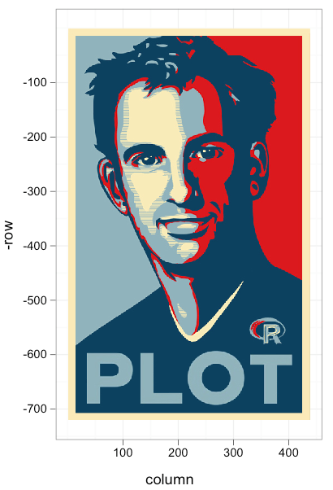

TensorFlow and a Googleverse like the Hadleyverse
Wednesday March 15, 2017
I've been having a good time looking at how TensorFlow incorporates Google technologies, and how some things (like the command-line helpers) seem to reflect Google's internal conventions for development. Taken together, the view of Google software practices via TensorFlow reminds me of the Hadleyverse.

"The Hadleyverse" refers to the many packages that Hadley Wickham has created and contributed to, which largely replace, for proficient users, the standard functionality available in the R programming environment. Wickham more humbly allows the name "tidyverse" and indeed, tidiness is part of the philosophy of his packages.
In addition to just providing useful packages with better functionality and better APIs than the ones that come standard with R, the Hadleyverse includes a lot of "how-to" as well. Among Wickham's freely available books are Advanced R, which contains a style guide, and the R Packages book for package developers.
Wickham is exceptionally productive and has had a large influence in the R community. He's also very open, sharing and communicating freely with tons of people.
Google might be even more productive than Hadley, but Google doesn't always seem to share as much. So the TensorFlow project can seem like a window into that Googleverse. And like the Hadleyverse, there is code, but there is also philosophy and practices.

For one thing, the TensorFlow code is an example of a Python code-base that follows the Google Python style guide. (I'm primarily interested in the Python parts.)
Of course Python has the venerable PEP 8 style guide, and I tend to like the NumPy/SciPy documentation guide for docstrings. But looking at the TensorFlow code has nearly convinced me that their more concise argument documentation could be the way to go, for example.
I'm also impressed with the religious use of pylint, and even just the organization of unit tests.
In places you can see TensorFlow moving from Google-internal things to more standard Python things: gflags and apputils to argparse, testing.pybase.googletest to unittest.
Google also doesn't just use GitHub; they've got a bunch of cool extra automation and review processes set up. When a pull request is submitted, googlebot and tensorflow-jenkins spring into action. Contributors have to fill out a Contributor License Agreement (CLA) online, and an admin is pulled in for review and to have tests run for the pull request. After all approvals are in, the new code can go in to TensorFlow.
Oh and there's also tensorflower-gardener, which I speculate is some connection between GitHub and work that happens inside Google proper.
It's interesting to think about what aspects of the Googleverse should (and/or could) be adopted by developers outside Google.